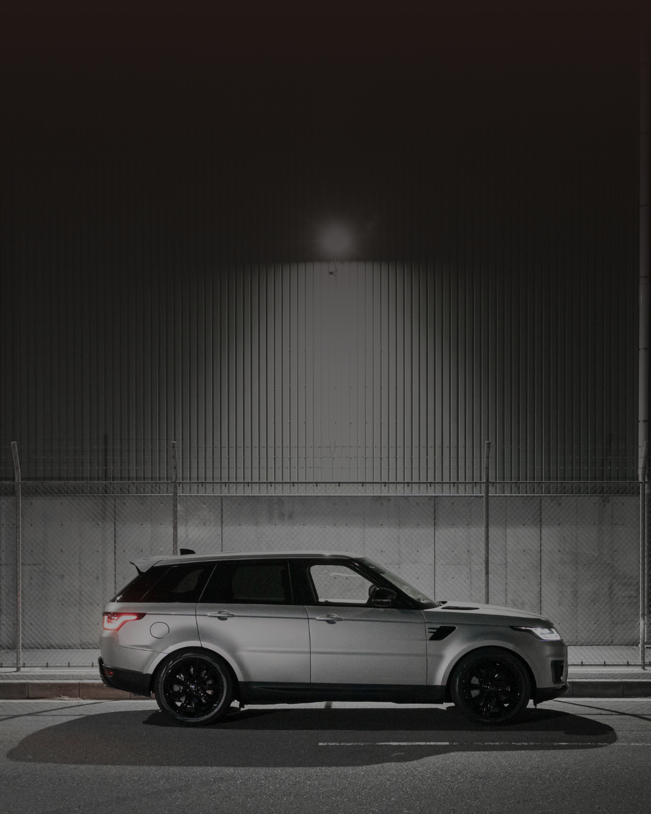

Precision. Performance. Perfection. We provide cutting-edge electronic wheel balancing and alignment services that make your drive smoother, safer, and more efficient — every time.
We use the latest electronic balancing and alignment machines to ensure perfect results every single time. Accuracy and reliability are at the heart of what we do.
Our certified professionals are trained to handle all kinds of vehicles — from standard cars to high-performance models — ensuring top-quality workmanship.
We value your time. Our streamlined process guarantees quick yet thorough service so you can get back on the road without delay.
We believe in honesty, transparency, and customer trust. Your satisfaction is our priority — and we make sure you leave with a smile.
Quality service shouldn’t cost a fortune. That’s why we offer competitive rates without compromising on excellence.
Whether it’s early morning or late night, our service team is always available for your vehicle emergencies.
At Fast Balance Auto Electronic Balance, we use advanced digital technology to detect even the smallest imperfections in your tires and wheels. Our expert team ensures your car’s balance and alignment are restored for a smoother and safer drive.
Proper wheel balancing not only enhances your comfort but also improves fuel efficiency, reduces tire wear, and extends your vehicle’s lifespan. Our computerized systems provide accurate readings that guarantee the perfect balance every time.
Whether you drive a car, SUV, or heavy-duty vehicle, we deliver precision balancing tailored to your vehicle’s specific needs. Our technicians use state-of-the-art equipment to ensure your vehicle performs at its best — every time you hit the road.

We start with a complete check-up of your tires and wheels to identify imbalance or misalignment.
Our advanced digital machines detect even the smallest vibration or weight difference for accurate results.
We carefully balance your wheels using electronic precision tools for perfect alignment and stability.
After adjustments, we test your vehicle to ensure smooth performance and optimal handling on the road.
“Amazing service! My car feels brand new after the balancing. Highly recommend Fast Balance Auto!”
“Professional staff, quick turnaround, and fair prices. They truly care about customer satisfaction.”
“Best balancing service in town! The ride quality of my car improved significantly after their work.”